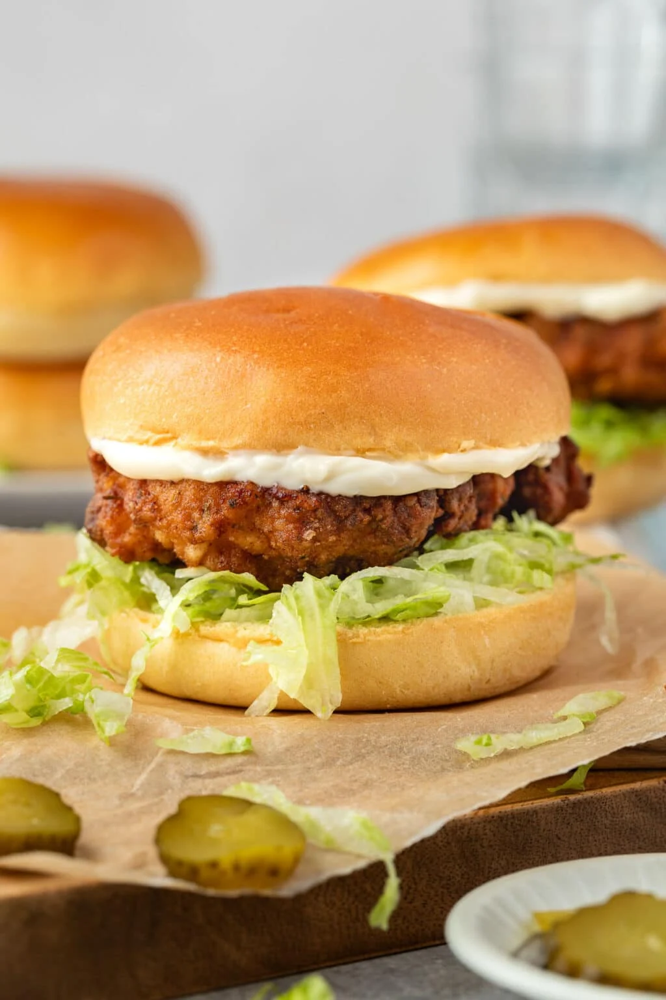

High Protein Chicken Burger
A lovely brioche bun topped with kewpie mayo, lettuce and a crumbed chicken patty! This burger is low in calories and high in protein, making it perfect for an active lifestyle.
Ingredients
- 4 Brioche buns
- 500g Chicken Mince
- 40g Crumbs - Kellogg's
- 60g Iceberg Lettuce
- 150g Kewpie Mayonnaise
- 2 Tsp Salt
- 2 Tsp Pepper
- 1 Tsp Garlic Powder
- 1 Tsp Onion Powder
- 1 Tsp Paprika
Steps
- Start by adding 500g of chicken mince to a bowl with 1 Tsp of paprika, 1 Tsp of onion powder, 1 Tsp of garlic powder, 2 Tsp of salt & 2 Tsp of pepper. Mix well with hands.
- Add baking paper to tray and lightly spray with cooking oil. Form chicken into 4 patties on tray and place in freezer for 30 minutes.
- Put 40g of crumbs onto plate with a dash of the seasonings above.
- Take patties out of freezer and evenly coat with crumbs, then spray with cooking oil.
- Air fry at 200C for 20 minutes/Oven bake at 200C for 20 minutes, flipping at half way.
- Toast the brioche buns on a pan with the stove on medium heat.
- Add one chicken patty to each bottom bun followed by a handful of shredded lettuce, then spread 37g of kewpie mayo on each top bun.